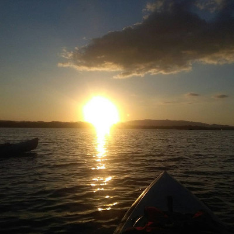
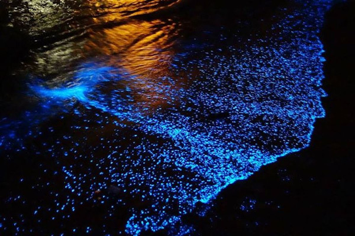

Kayack Sunset Tour
This tour will clear your mind of any problem, just let yourself be carried away by the waves of the sea and its beautiful song. The place of departure is from the main beach of Puerto Jiménez, bordering the coast in search of to find the luck to see dolphins, a descent is made at Puntarenitas beach where you can bathe and enjoy the sand, while appreciating the sunset, once this act is finished it is returned to the starting point. Departure time: 3:00 pm Return time: 6:00 pm Minimum of people: 2pax Maximum of people: 20pax This includes: Water, fruits, dry bag and all the necessary equipment.
Mangrove Kayack Tour
Definitely if your thing is to see animals while you paddle, we recommend this tour, you can see monkeys, birds, reptiles (caiman, basilisk, and snakes) and crabs. During the tour Our guide will give you a description of the different species of mangrove that we have in the South zone, we will go around to make a 15-minute stop at Puntarenitas beach, where you can enjoy its calm waters. The place of departure is from the main beach of Puerto Jiménez and the departure time will depend of the tide, the tour lasts 3 hours, and includes: water, fruits, dry bag and everything the equipment you will need. Minimum of person: 2pax Maximum of people: 20pax

Bioluminance Tour
We invite you to enjoy this fascinating natural phenomenon, biolumination is a process that occurs in some living beings, it can only be seen on the beach at night, or just with the movement of the water a flash of light is formed. It leaves from the main beach of Puerto Jiménez, if there is a possibility of entering through the mangrove (already which depends on the tide) otherwise you skirt the coast and make a stop of 15 minutes so that you can take photos of the sunset and enjoy a swim in the calm waters of Puntarenitas beach, while waiting for darkness to fall to appreciate the plant and provide information on this phenomenon. Departure time: 4:00 pm Return time: 7:00 pm Minimum of people: 2pax Maximum of people: 20pax This tour includes: Water, fruits, dry bag and all the equipment you will need.
Kayack Sunrise Tour
There is no better than starting the day with a spectacular view of the sunrise and filling your lungs of pure and fresh air, it's like charging your internal batteries. It leaves the main beach of Puerto Jiménez, bordering the coast to appreciate the sunrise, If there is a possibility of entering through the mangrove swamp (since it depends on the tide), if not continue with the trip along the coast waiting to see the beautiful dolphins. Departure time: 5:00 am Return time: 8:00 am Minimum of people: 2pax Maximum of people: 20pax This tour includes: Coffee, water, fruits, tea, dry bag and all the equipment you will need.

Artisanal Fishing Kayack Tour
If you like adventure and put your fishing skills into practice, this tour is ideal for you, you can feel the adrenaline rush through your body, when you get hooked on a fish your bait and measure the strength with each other. You leave the main beach of Puerto Jiménez, look for the best fishing point and let it begin the action, in the course of fishing, can be visited by dolphins who also go hunting. The departure time is determined by the client. Minimum of people: 2pax Maximum of people: 20pax This tour includes: Water, fruits, dry bag and all the equipment you will need.

Snorkel Kayack Tour
If you like diving at the water level, to observe marine life, while you forget about your surroundings and you only enjoy golf, do not miss the opportunity to book this tour, which takes place in Sándalo beach, located approximately 8 km from Pueto Jiménez. This gulf is recognized for to be a fjord and at the same time the cradle of reproduction of marine species. You can get to Sándalo beach in your own vehicle or we can take you there. The departure time depends on the tide (it must be low). Minimum of people: 2pax Maximum of people: 20 pax This tour includes: Water, fruits, dry bag and all the equipment you will need.